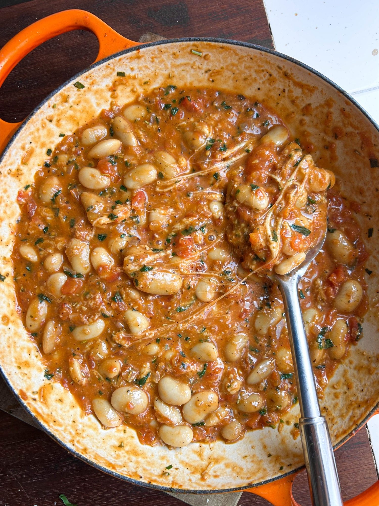

Bubbling One-Pan Cheesy Tomato Butter Beans
Fresh tomatoes cooked down with butter beans and melted mozzarella and cheddar, all in one pan.

Ingredients
To serve
Method
- Heat the 3 tbsp olive oil in a large, wide pan over a medium-low heat.
- Cut the tops off the 6 tomatoes and nestle them cut-side down around the edge of the pan.
- Add the 1 small onion to the middle of the pan and stir gently so it is coated in the oil.
- Cover and cook for 12-15 minutes, until the tomatoes have softened and the onion has turned translucent, adding a splash of boiling water if anything starts to catch.
- Peel away the tomato skins and discard them.
- Crush the tomatoes into the pan with the back of a fork, keeping some texture rather than working them smooth.
- Add the 3 garlic cloves, 1 tbsp tomato purée, 1 tsp dried oregano and 1 tsp dried rosemary with a good pinch of salt and pepper.
- Stir well and simmer for a few minutes, until fragrant.
- Stir through most of the 10g basil or parsley, saving some to garnish.
- Pour in the 660g jar of butter beans with their bean stock, stir to combine and cook for 2 minutes until warmed through.
- Tear in the 75g mozzarella and add the 75g cheddar, stirring until they melt into the sauce and it turns rich and creamy.
- Serve hot, scattered with the remaining basil or parsley, with crusty bread for dunking and the dressed salad leaves alongside.
Notes
Peeling the tomato skins is worth the effort: the juices break down into something silky rather than stringy.
Source: https://boldbeanco.com/blogs/beanspo-recipes/bubbling-one-pan-cheesy-tomato-butter-beans